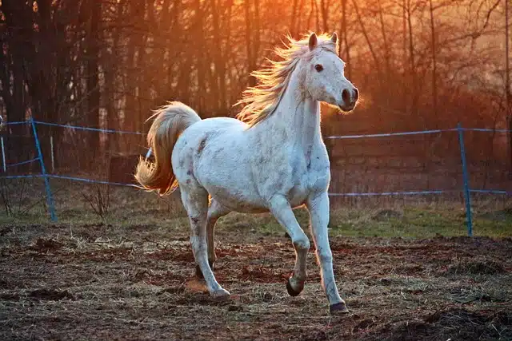

Caballo
El caballo (Equus ferus caballus) es un mamífero perisodáctilo domesticado de la familia de los équidos. Es un herbívoro de gran porte, con cuello largo y arqueado poblado por largas crines.
A la hembra del caballo se le llama yegua y a las crías, si son machos, potros o potrillos, y si son hembras, potras o potrancas. La cría y utilización del caballo por parte del hombre se conoce como ganadería equina o caballar, y su domesticación se remonta a 3600 a. C., en la región de Kazajistán.
